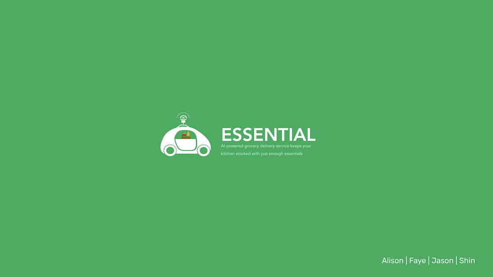
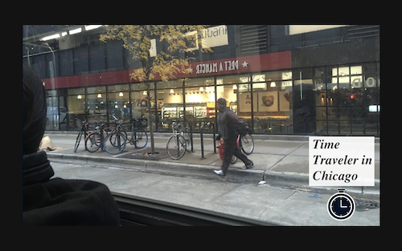
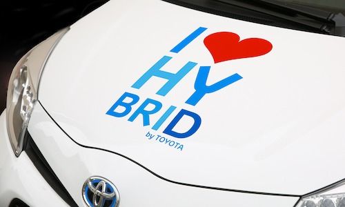
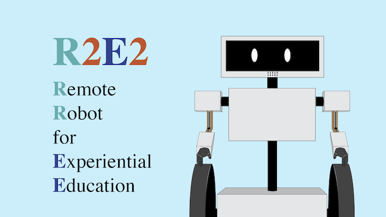
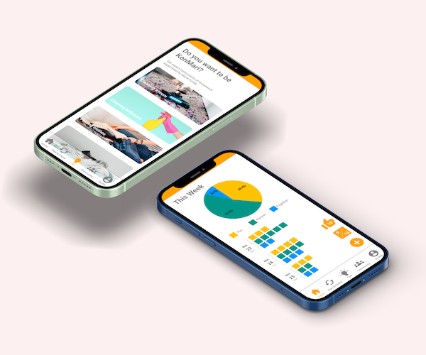
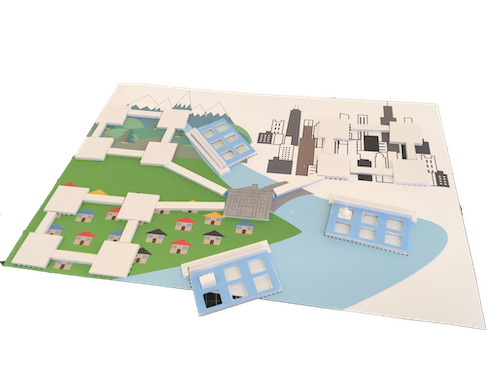
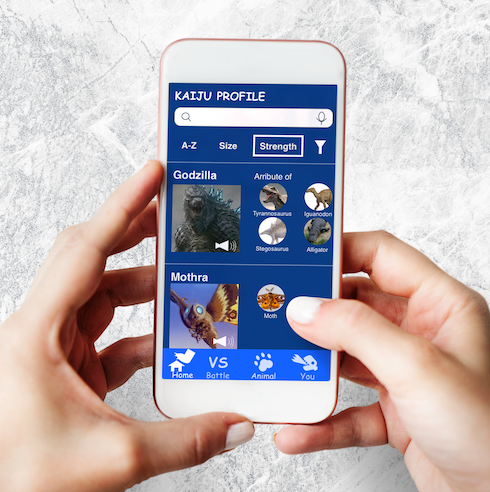

Hi, I'm SHIN
A researcher, a data analyst and a designer
My background is data analysis and user research at Toyota, and I'm a graduate student of Institute of Design at Illinois Tech.
Mobility
UX / UI Design, System Design
Transim
Transit simulator with d3.js to experiment policies in a mobility field
UX / UI Design, System Design
Essential
AI-powered local delivery that keeps your kitchen stocked with the essentials.
UX / UI Design, System Design
SAUVVI
Semi-Autonomous Vehicle Visual Interface for energy efficient driving
UX / UI Design
Time Traveler in Chicago
An Augumented reality application that passengers in a buy enjoy the city's history.
User Research
Insights of Alt. Fuel Car User
Quantitative & qualitative analysis to understand user insights and reevaluate a product core value.
Education
Speculative Design, Digital & Physical Design
Teleducation
A remote robot that reduces physical learning constraints for students
Speculative Design, Digital & Physical Design
Collab
A remote robot that reduces physical learning constraints for students
UX / UI Design
Flood
A board game that helps the players learn about how to deal with the natural desaster
*Under Construction
UX / UI Design
Gozipedia
A fun learning app of real creatures through "Kaiju", giant imagenary monsters